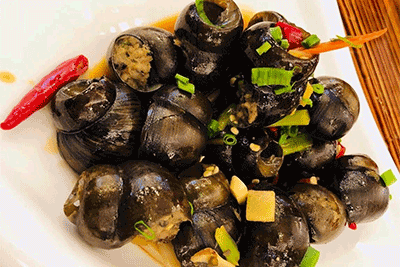

桂林米粉是广西地区历史悠久的特色传统名小吃。以其独特的风味远近闻名。其做工考究，先将上好的早籼米磨成浆，装袋滤干，揣成粉团煮熟后压榨成圆根或片状即成。圆的称米粉，片状的称切粉，通称米粉，其特点是洁白、细嫩、软滑、爽口。其吃法多样。制作最最讲究卤水的制作，其工艺各家有异，大致以猪、牛骨、罗汉果和各式佐料熬煮而成，香味浓郁。卤水的用料和做法不同，米粉的风味也不同。大致有生菜粉、牛腩粉、三鲜粉、原汤粉、卤菜粉、酸辣粉、马肉米粉、担子米粉等。
灵川狗肉有“天下第一美味”之誉。狗肉肉质鲜美，营养丰富。有滋阴补肾，祛寒健胃等大补之功，以秋初至春末食之最佳。灵川狗肉烹调工艺独特，从选狗、杀狗、切狗烹调到品尝皆有讲究，食后余香满口，通体舒泰，令人百吃不厌，回味无穷。

桂林的田螺非常特别。首先是大，最大的差不多有乒乓球大小了；其次是它的味道，完全不像螺肉本身的味道。里面的肉并不全是螺肉，而是先把螺肉掏出来，混合猪肉、香菜及其它调味品一起剁碎，再填入螺的空壳里混合汤汁一起烧制。
欢迎来到桂林旅游